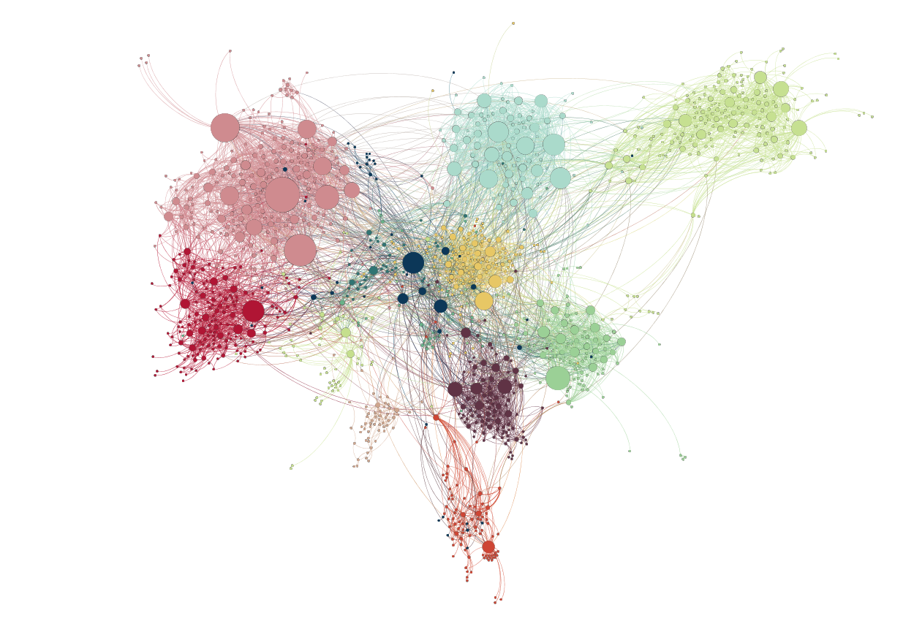

MAPPING SCIENCE AND SOCIETY ACTORS ON THE WEB
Name: Raj Buddhadev Course: Data Visualization (CSE 578) Date: 5th November 2018
Link to dataset - https://github.com/gephi/gephi.github.io/blob/master/datasets/eurosis.gexf.zip
The dataset is about mapping the interactions between Science and Society actors (Universities, Research Centers, Companies, etc.) on the Web for 12 European countries. The mapping reveals the most influential stakeholders in the network and the ones that are most active.
Below is the network visualization of the dataset where the nodes represent the institutions and the edges represent the interaction between them.

Layout : ForceAtlas 2 Node & Edge Color : By Country Node Size : By Degree
This graph has communities formed on the basis of the countries in which institutions are located. Nodes(institutes) of the different countries are represented using different colors.
Average Degree Centrality of this graph is 11.71, which means that on an average an institution interacts with approx. 12 other institutes. This number can be skewed up or down a little by high degree nodes or low degree nodes. But, the average does help to form some sort of perception about the interactions between these institutes.
Average Betweeness Centrality of this graph is 1821.74, which means that on an average a node occurs 1822 times in the shortest paths from one node to another. The high value of betweeness centrality can mainly be beacuse of the nodes at the centre, which might be occuring high number times in the shortest path from one node to another.
Average Eigenvector Centrality of this graph is 0.09257, which means that the average influence of a given node on the network is 0.09257 units. The average eigenvector centrality is low for this graph because many nodes have interactions with small number of nodes(which are also less influencial in the network) and hence, they contribute to a low eigenvaector centrality.